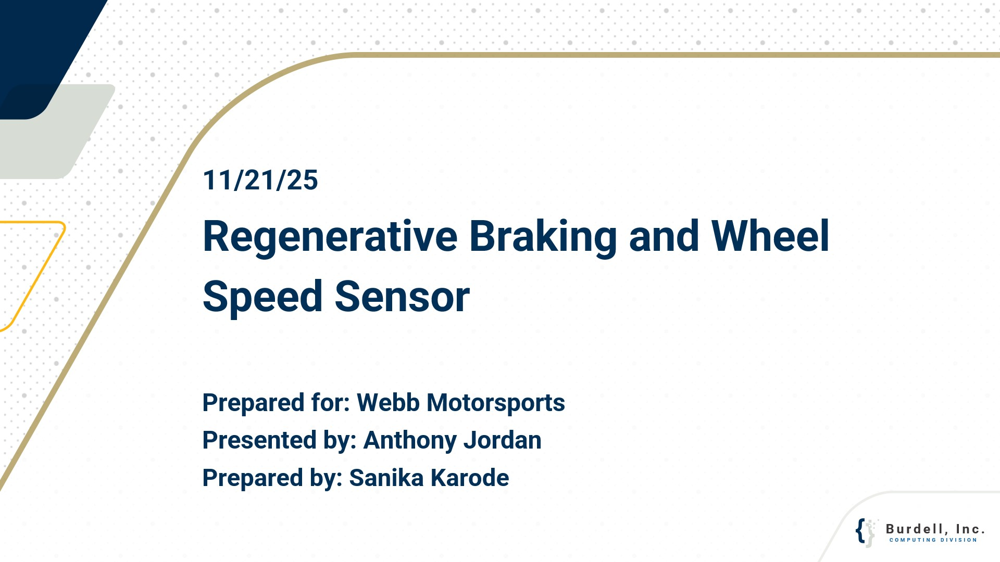
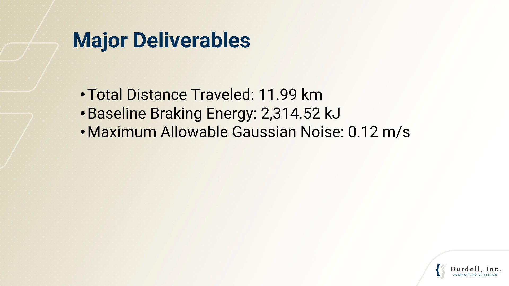
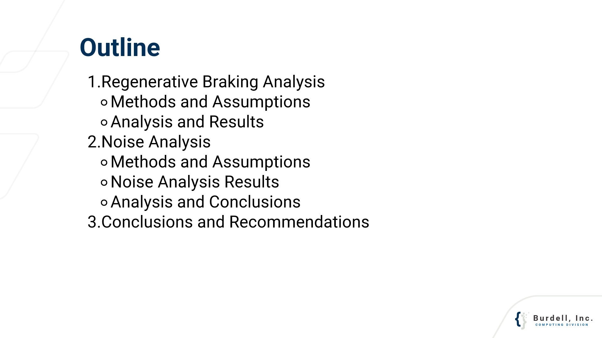
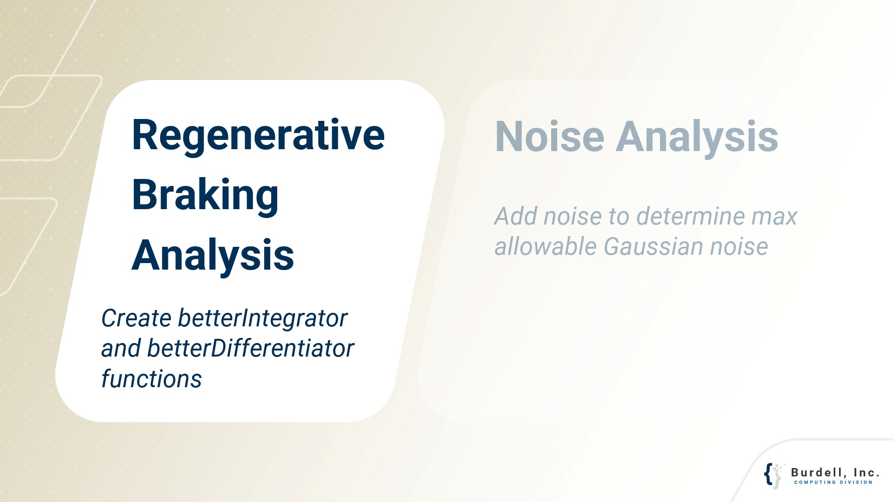
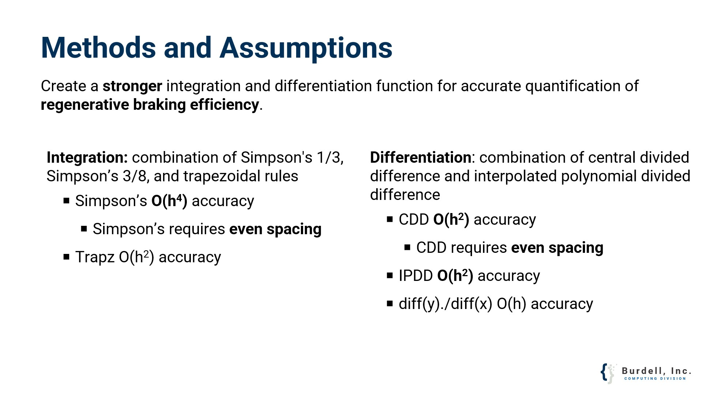
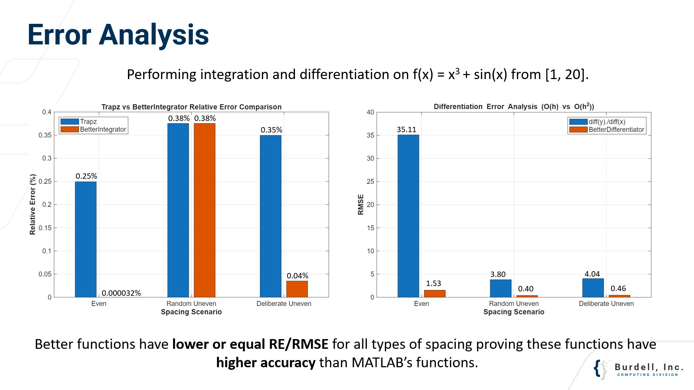
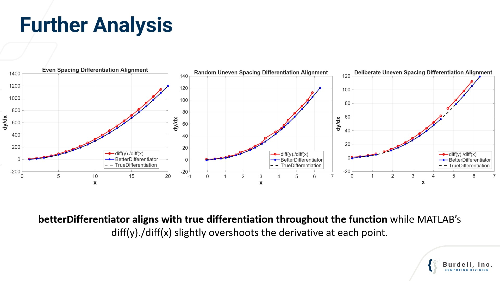
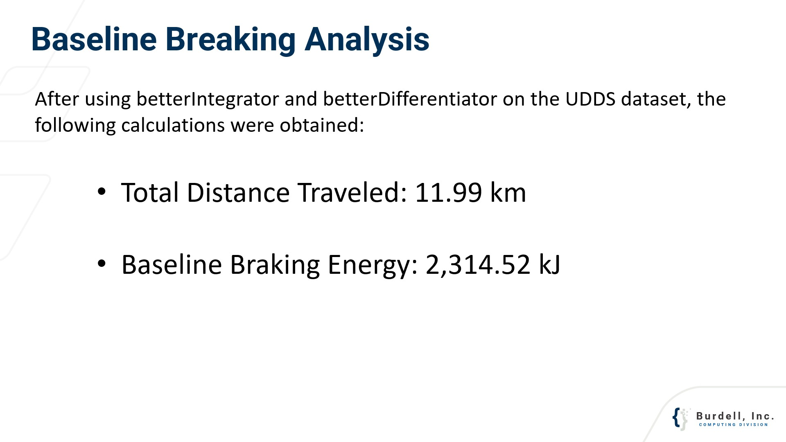
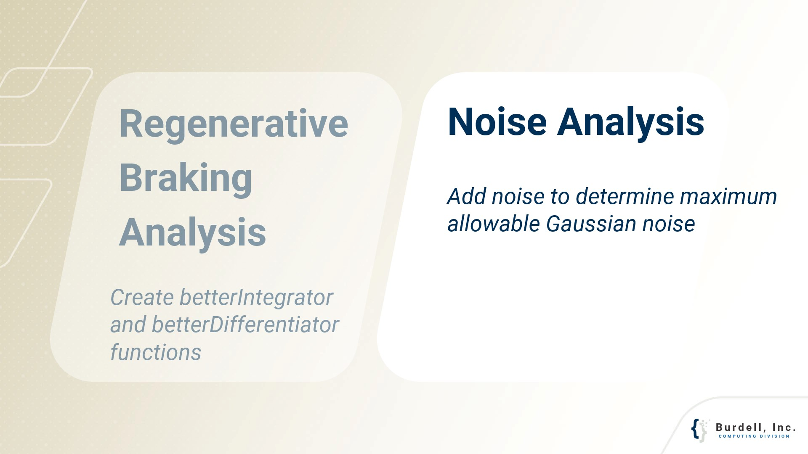
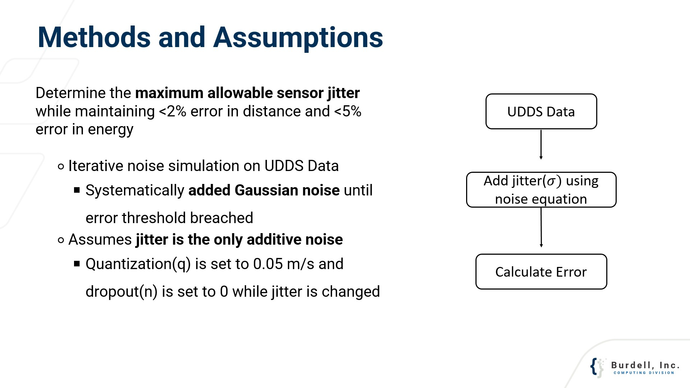
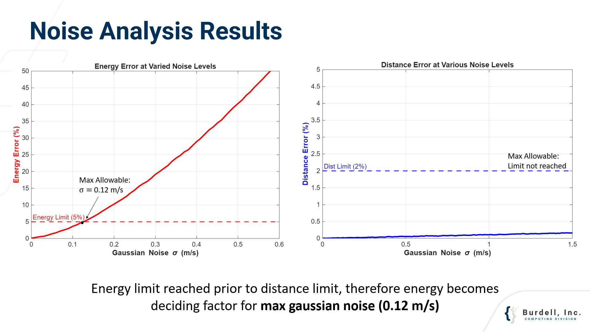
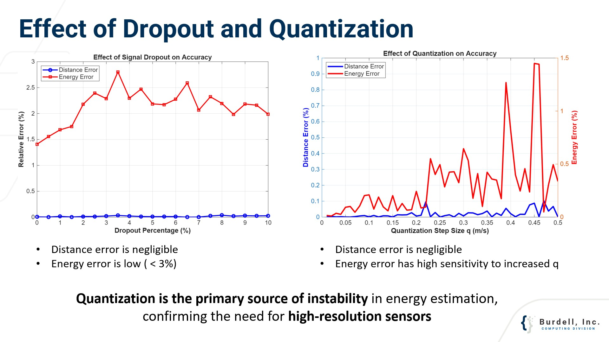
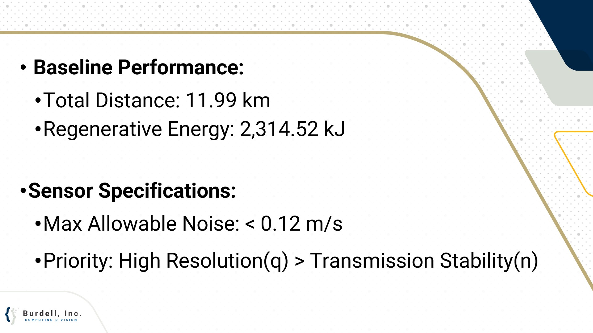
Mock Consulting Project for Webb Motorsports
I developed custom MATLAB functions to quantify energy recovery efficiency. Using a hybrid integration approach (Simpson’s 1/3, 3/8, and Trapezoidal), I achieved O(h4) accuracy. This was verified against the UDDS dataset to establish a baseline regenerative energy of 2,314.52 kJ.
My sensitivity analysis revealed that energy estimation is far more susceptible to quantization than data dropout. Low-resolution sensors create "staircase" data, causing mathematical spikes in acceleration that lead to energy calculation errors exceeding 5%.
For Webb Motorsports, I recommended prioritizing High-Resolution (q) sensors. The maximum allowable jitter was determined to be 0.12 m/s; exceeding this threshold compromises the integrity of the regenerative braking analysis.